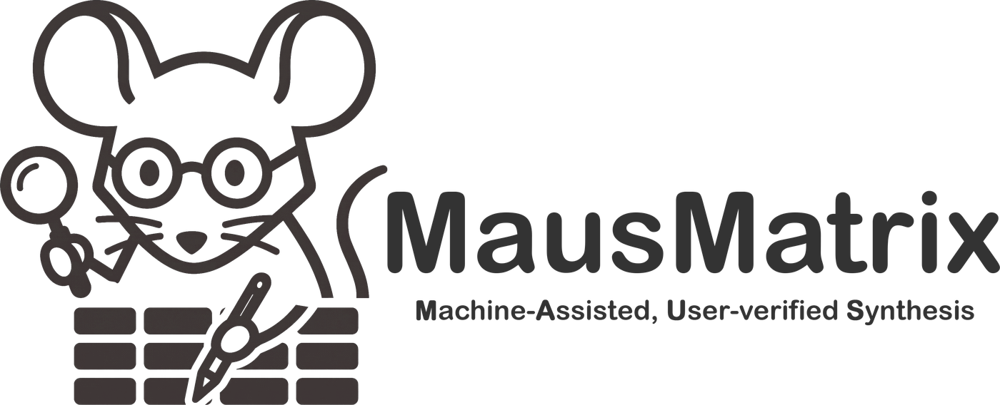

Sample size
A total of 248 participants completed both sessions and were included in the analysis.
p.6 · found word for wordAI · needs review

AI reads the papers. You verify every claim. Every cell points back to the exact sentence in the PDF it came from.
A total of 248 participants completed both sessions and were included in the analysis.
A randomised controlled trial with two parallel arms.
Every quote is searched in the real PDF. Found, it links to its page; not found, the cell is flagged before anyone relies on it.
Every value comes with a verbatim quote, and the quote is searched in the real PDF before it enters the table. A fabricated quote cannot get in.
Claude screens and extracts; you confirm each statement with one click. Your confirmation is never overwritten by a machine.
MausMatrix runs as a single file in your browser. No server, no account. Papers are only sent to the AI model you choose.
Built for systematic reviews and meta-analyses: screening, data extraction, risk of bias and effect sizes, from title and abstract to the full text.
MausMatrix is in active development. Interested in trying it with your research group? Get in touch.
AI-generated results can be wrong. MausMatrix shows the source of every value so you can check it; verifying results and how you use them is your responsibility. AI providers are used under your own accounts and their terms.